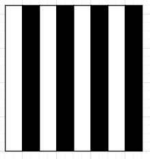
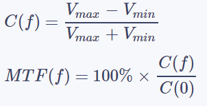
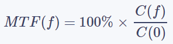
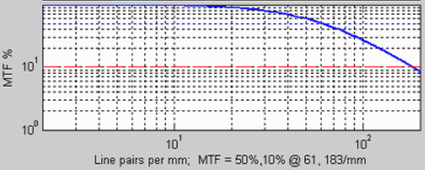
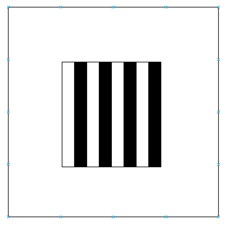

分辨率单位解释（MTF）
测试 MTF 的时候可是遇到了太多分辨率单位了，如 lp/mm、cycle/pixle 等等，实在是捉摸不透为什么要这样做，网上相关资料也少得多，最后果然还是 imatest 的解释最为直观和靠谱。
首先我想强调的是，对于相机而言，分辨率这个翻译，实在太烂了，应该叫做解析力！！而这里的分辨率是指物理空间的分辨率，和我们常说的相机 resolution 没有关系。
一、LP/mm
首先要知道什么是 LP，说人话就是一对黑白线条。那么 LP/mm 就是 1mm 下有多少对黑白线条。比如下面的图，假设边长是 1mm，就是 4LP/mm。

-
现在让我们穿越时空，回到胶片时代。你想比对不同相机的好坏，怎么办？任何胶片相机都会在一张胶片上最终成像，而任何胶片的长和宽都是一样的！那就好办了，我比较胶片上能分辨黑白线条的极限就可以了呀！所以我就每次拍一张固定大小的 LP/mm 的线对图，看看我能不能在胶片上分辨出黑白线条，能就提高分辨率再拍，直到找到临界点。
-
一个问题：现实世界的黑白条纹图的分布密度是否会有影响？答案：不会！
我们是在胶片上看 LP/mm 的，有两种方式：第一，打印一张图片，然后镜头逐渐往后移动，这样就导致胶片上越来越小；第二，打印多张不同分布密度的图片，镜头固定在统一位置。第一种的方式就能解释刚才这个问题，我不管现实世界怎么样，我只看你生成的图片能分辨多细的线条。你物理空间再细，我大不了镜头往前怼就行了。
这里提一下测试卡的数字含义，我初学时总是被这个干扰：当卡占满画面，线条对应数字*100 即为画面中每单位高度的条数。拍摄时不一定要占满整个画面，但此时需要进行标定。
-
但是找临界点有问题，能否分辨实在太过主观，因此，MTF 指标被引入了：

V 表示像素值。后期模糊没法看的时候，像素值都很接近，MTF 值就会很小。所以我们可以得到一个函数，横坐标是 LP/mm，纵坐标是上面的值。
-
但是想象一个场景，你用一个很好的相机在很远的地方拍墙，我们在墙上画黑白线条，由于距离过长，所以光会衰弱，那相比正常较近拍图的场景，同样的 LP/mm（即胶片上的黑白线条密集度），纵坐标会小很多！为了防止这种情况，第一是不要有这么极端的场景；第二就是除以 LP/mm=0 时的纵坐标值（有点抽象，可以不用 0，就当成是 1LP/mm）：

这个时候纵坐标不是一个值，而是比例。那么刚才那个极端场景，它 LP/mm=1 时（0 不好想象，就当成 1 来看），C(1) 本身就比较小，因此以后 C(f) 除以它多少能缓解上面的担忧。下图是一个例子：

二、LP/PH
好，现在我们回到这个数码相机时代。遇到了一个问题，数码相机最后的传感器（类比胶片相机的胶片）大小不是统一的！而且数码相机是按像素说话的。假如两个相机极限都是图中有 4LP，再细一点就不行了，图片都是 8*8 大小。会不会一个 1mm 大小像素的相机拍一张，而另一个 2mm 大小像素的相机是在近一点拍的！
首先我来解释为什么 2mm 的相机是近一点拍的，如果同一距离，那么 1mm 的相机拍满时，2mm 的画面是这样，所以要近一点拍。：

首先需要知道上面所说的两个相机，哪一个分辨率更好？1mm 的相机是 4LP/8mm，2mm 的相机是 4LP/16mm。那么是 1mm 吗？答案是都一样。因为比较的是整体分辨率，即拍同一个场景，它们的解析力如何。（这个非常重要，需要理解）如上图所示，对于 2mm 的相机，由于 1mm 相机拍的只是里面的线条图，所以我可以近一点拍。如果我换了一个更好的 1mm 的相机，那么此时要拍摄同等大小的图片，2mm 的相机的距离是固定的，而这个时候 2mm 的相机拍不了更细的图片了。此时对于同一场景，新的 1mm 相机有更好的解析力。
选择什么指标呢？从上面的例子能看出 LP/mm 肯定不行。假设我固定住二者的镜头距离进行对比，但这个方案不科学：第一，我之前打印一张照片，然后镜头逐步往后移动的方式就不行了（见 1.2）；第二，比较两个相机可以，但是你怎么进行多个相机比较呢，怎么进行官方对比呢，总不能说我这是固定多少距离拍摄时的镜头对不同 LP/mm 的解析力。
所以，让我们思考，对于同一场景的解析力，实际上相当于相机拍的图片里面能够容纳多少条线！那么假设 1mm 可以存下 x 条 pair，即相机是 x LP/mm；而相机的宽度为 n pixels，像素的大小为 s（mm），那么可以存下 x*n*s 条 pairs。这就是 LP/PH 的由来，其等价于 LP/mm 和图片总宽度（mm) 相乘。
三、LP/P
这里的 P 是指 Pixel；我们先来考究它的公式，然后再去思考它的意义。
计算肯定是很好算的，比如上面所说两个相机的图，它们都是 0.5LP/P；但关键的是 LP/P 和 LP/mm 有什么关系？当像素大小是 s(mm) 时候，很显然 1(LP)/1(P)=1(LP)/s(mm)。即当相机有 x(LP/mm) 时，他的 LP/P 为 x*s。
回顾之前的 LP/PH，假设有 n 个像素，则它可以表示为 x*s*n（LP/PH）；相当于是 LP/P再乘以像素个数嘛。另外，LP/P的上限是0.5，这是很显然的，理想情况一个像素一条线呗。
使用 LP/P 能体现对单个像素的利用能力，这有什么用？个人认为，这可以用于指导相机厂商：有一款 2K 相机和一款 16K 相机，2K 相机有很高的 LP/P，但受限于像素个数，LP/PH 比 16K 的低。但是我们有理由相信，当 2K 相机款式做出 16K，一定比另一款 16K 解析力要好。
下面讲一个例子说明为什么像素个数会使得相机总体的解析力提高，以此补充对 LP/PH 的理解。本来放大率为 1、传感器大小为 8*8 的 1mm 的相机拍一张8*8mm 共 4LP 的条形图时到了极限。即此时一个像素对应一条线，这是它的像素极限了。突然这个时候，相机多了一倍像素数量，即画面多了一倍。那我为了拍原来的图，我就得离近一点拍，8*8mm 的现实世界图放入了 16*16mm 的图片时间的图中。此时相当于两个像素对应一条线，远远没到我的像素极限，我就拍更细的图，所以我的相机整体解析力提高了，我单个像素的能力还是一样的。
四、其他单位
没啥好说的，1Cycle=1LP=2LW
五、参考文章
主要来自 imatest，第三篇的中文也帮了我很多。不过总体都挺晦涩的。
https://www.imatest.com/docs/sharpness
https://www.cnblogs.com/ybqjymy/p/12357854.html
最后的注意点：测试 MTF 要用多帧平均，即去除噪声后的结果…否则你会看到同一块测量结果居然会有很大的不同。